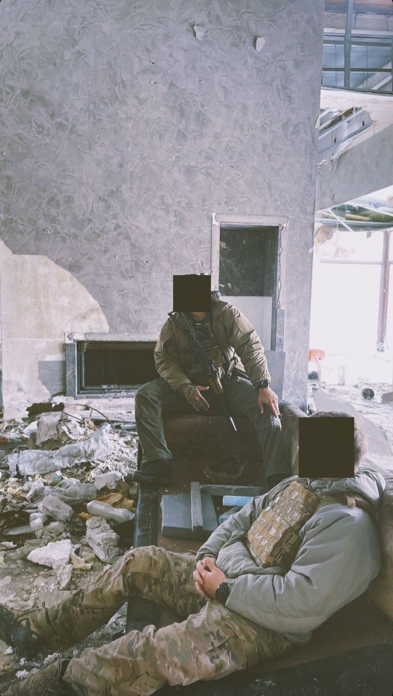
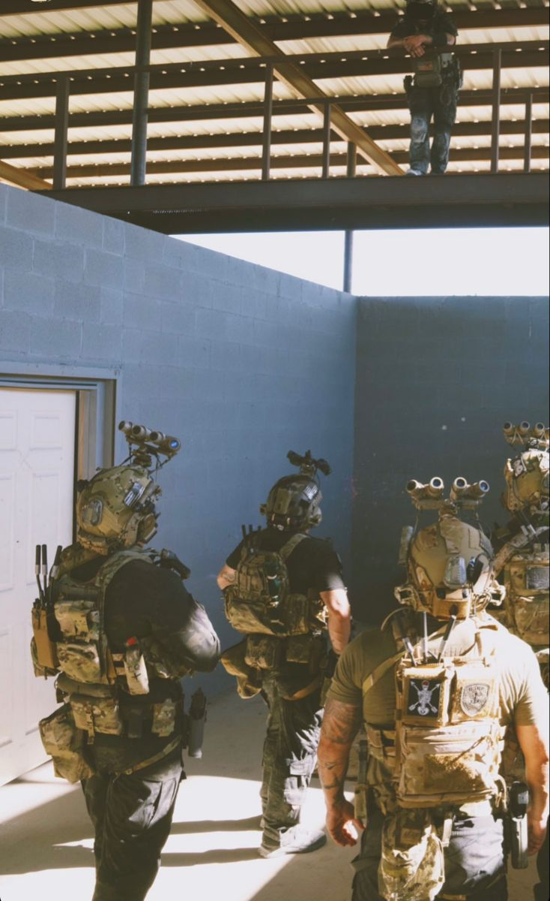
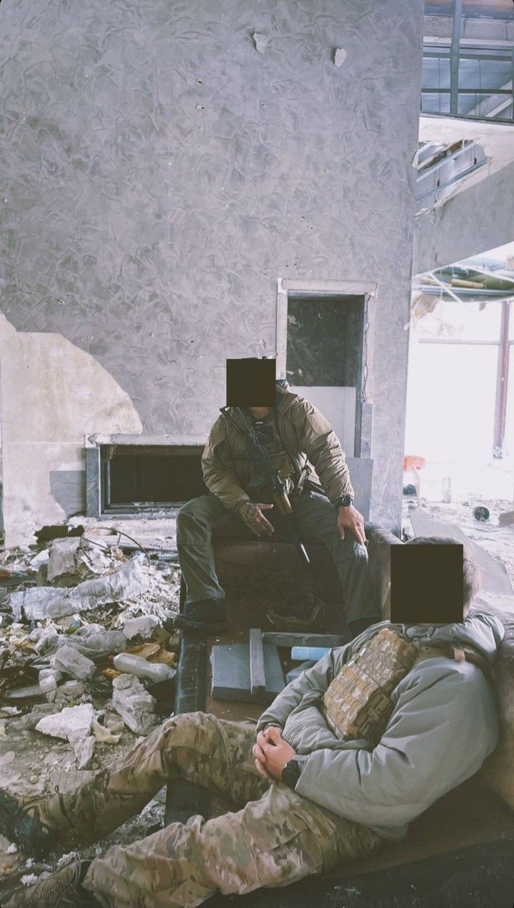
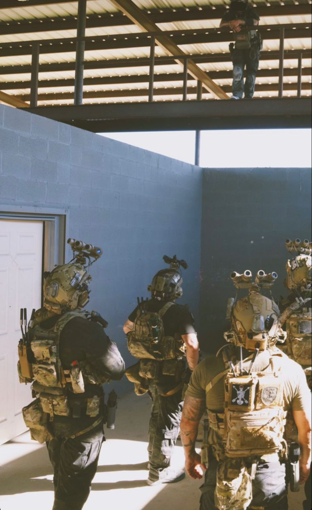

ABOUT US
Forward Observations Group (FOG) is a military lifestyle brand founded by former U.S. Army infantryman Derrick Bales. They sell tactical gear and branded accessories and have a significant presence on social media platforms like Instagram and YouTube. FOG has garnered attention for its members' travels to conflict zones such as Ukraine, Iraq, and Syria, where they document events like the Russian invasion and the Syrian civil war and connect with local fighters.
In 2021, FOG faced scrutiny when photos of its members in Ukraine tagging members of the Azov Battalion raised questions about their role as either journalists or combatants. Notably, a Russian Ministry of Foreign Affairs statement in 2022 falsely accused FOG of involvement in a fabricated chemical weapons plot in Ukraine, allegations strongly denied by FOG and the U.S. State Department
Interestingly, the logo of Forward Observations Group has been featured on merchandise marketed by social media channels linked to the Wagner Group, referencing the murder of a Wagner Group member. Despite the controversies, FOG has also been involved in sourcing aid for Ukrainian fighters.